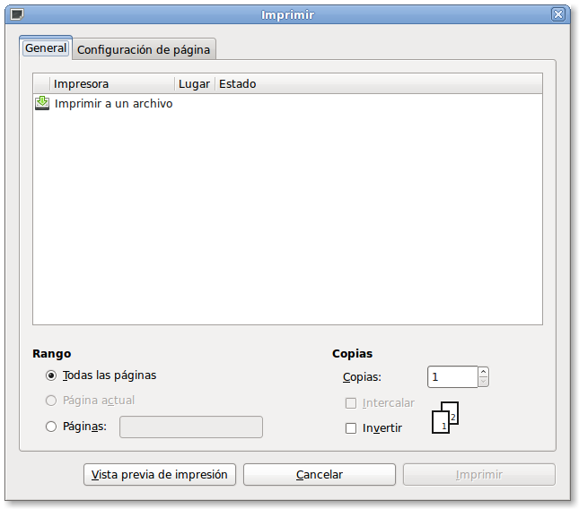

Este ejemplo muestra como usar gtk para mostrar el diálogo de imprimir pero sin usar el main loop.
Es útil para aplicaciones no gtk que solo quieren usar el diálogo de impresión pero tienen otro main loop que no es el de gtk.
Explicación: Lo que hacemos después de mostrar el diálogo es procesar los eventos de gtk mientras haya eventos pendientes, luego seguimos en nuestra aplicación normalmente.
